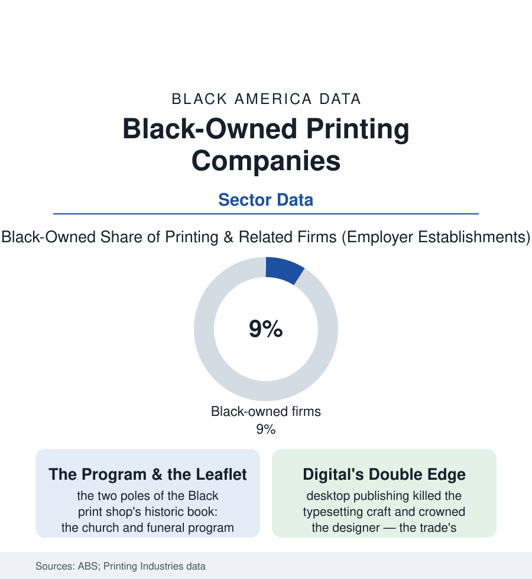

Black Business
The Print Shop: Ink, Institutions, and the Paper Trail of Black America
The Black print shop printed the movement's leaflets, the church's programs, and the funeral's obituaries — a small industry with an outsized archive. The printing file.

Every institution in this atlas ran on paper, and somebody printed it: the church bulletin and the funeral program, the union leaflet and the campaign handbill, the lodge's charter and the beauty college's certificates. The Black print shop — roughly nine percent of the nation's printing firms in the business survey — was the community's paper infrastructure, a trade whose product was the record itself. This article reads the printing file.
The Shop and Its Book of Business
The economics were the neighborhood trades' classic pattern: the press as the capital moat (the offset press's cost sorting owners from employees as decisively as the laundromat's machines), the skill lineage running from the Black press of the media file (the newspaper pressman was the trade's aristocrat; more than one commercial shop began as a newspaper's idle-hours sideline), and a book of business as institutionally Black as any in this atlas — the churches on weekly cycle (bulletins, anniversary books, the pastor's portrait in the souvenir journal), the funeral homes' programs (the homegoing file's printed artifact, turned around overnight as a point of professional honor), the fraternities' and lodges' regalia paper, the schools' yearbooks and the campaigns' walk cards, a clientele whose orders were small, perpetual, and loyal beyond the price sheets' logic. Around the commercial core stood the segments the survey counts with it: the quick printers and copy shops of the franchise era, the forms and check printers of the banking system's back office, the specialty houses (the Black-owned packaging and label printers supplying the food and beauty brands of the other business files — the industry supplying the suppliers). The workforce rows hold the trade's open secret: printing was for a century among the most segregated of the skilled crafts (the typographical union's color line among the labor histories' most documented), so the Black print shop was, like the Black bank, partly a creation of exclusion — the craft learned in the Black press's composing rooms and carried into ownership because the white shops' doors and the union's books were closed in the same decades.
The Digital Rewrite
No trade in this section was more thoroughly rewritten by the computer: desktop publishing abolished the composing room (the typesetting craft, a lifetime's skill, devalued in a product cycle), digital presses collapsed the run-length economics (the hundred-program order the offset press scorned became profitable), the online print platforms nationalized the price competition (the upload-and-ship giants pressing the local shop's margins as they pressed the pharmacy's), and the storefront's center of gravity shifted from ink to design — the surviving Black shops in the trade data increasingly hybrid houses: print broker, brand studio, sign and banner plant, the church program now ordered from a template portal the shop itself built for its congregations. The demand side shifted with the culture it served (the funeral program — the shop's most sacred product — now as often a family's DIY template as a printer's commission, the homegoing's paper entering its digital edition) while the institutional base adapted (the megachurch's media ministry an in-house print operation, the HBCU's communications shop). What the file preserves, beyond the economics, is the archive function no survey priced: the Black print shop's job tickets and samples, where they survive in attics and historical societies, constitute one of the fullest material records of Black institutional life — every leaflet a meeting, every program a funeral, every journal a church's self-portrait — the printer, in the end, was the community's first publisher of everything. A consumer niche rode the same shift: the Black-owned paper-goods labels — the greeting cards, journals, and planners whose founders the gift-industry data began counting in the last decade — selling the community's own iconography through the big-box aisles the old shops could never enter, print's ownership moving from the press to the copyright.
Reading the Printing Data
Nine percent of the nation's printers, and a hundred percent of a people's paperwork: the print shop's numbers understate its role the way the funeral home's do — some businesses sell a service and some carry a civilization's filing system. The census counts the firms. The programs in the family Bibles, each with the printer's line in small type at the back, are the truer circulation figures.
More in Black Business
Black-Owned Businesses: Counts, Receipts, and the Representation Gap
About 161,000 Black-owned employer firms and three million solo ventures: how the Census Bureau counts Black business ownership, where firms concentrate, and the gap between population share and business share.
Black Median Net Worth: The Wealth Gap in Federal Reserve Data
The Federal Reserve puts Black median family net worth at $44,900, against $285,000 for White families — about 16 cents on the dollar. The widest gap in economic data.
Black Buying Power: The $1.8 Trillion Consumer Economy
Black buying power is estimated at about $1.8 trillion — larger than the economy of most nations. What the figure measures, who produces it, and what it buys.
Source: U.S. Census Bureau Annual Business Survey; U.S. Bureau of Labor Statistics printing industry data; Printing Industries of America / association economic reports.